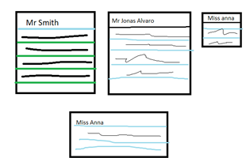
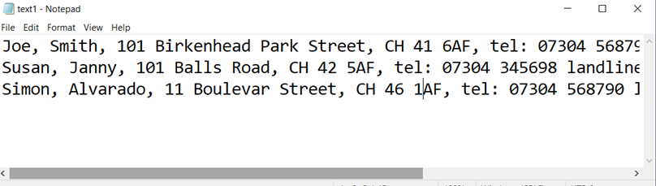
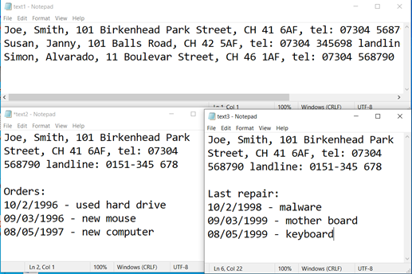
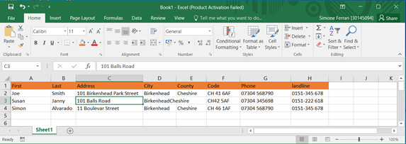

A database is a set of structured information (or data) typically stored electronically in a computer system. Usually, the database controlled by a database management system (DBMS). The data, the DBMS and associated applications referred to as a database system, often abbreviated to database only.
Data within the most common types of databases currently operating in rows and columns contained in a series of tables to ensure efficient data processing and querying. This data can viewed, managed, modified, updated, controlled and organized. Most databases use Structured Query Language (SQL) to write and query data.
A DBMS acts as an interface between the database and end users or programs to allow users to retrieve, update and manage the way information is organized and optimized. In addition, a DBMS facilitates the supervision and control of databases, making available a wide range of administrative operations: performance monitoring, tuning and backup and recovery.
Some examples of popular database software or DBMS systems are: MySQL, Microsoft Access, Microsoft SQL Server, FileMaker Pro, Oracle Database and dBase. There are many different types of databases, and the most suitable for a specific organization depends on how that organization intends to use the data.
Early age companies office and most of people used to save information in paper ledger or Index cards, and spending a lot of time and money in paper and things like this.
However when the first computer came along, people specially in the office or own job like Dentist, Accountant, private sector will start save data with simple Notepad which I believe you are familiar with that. Therefore, the information they save so far it was very good but still not organize!
This was a very good way since computer came and helped people to store information easily than before. I would say, Notepad introduce a smart way to store data.
One the problem they had with Notepad was, when they were looking for different information about the same person or the same orders or a specific information related to that person they had to have different Notepad files. (See the picture below).
Therefore, this was a huge problem because they had multiple files for the same person and imaging 500 customers. I mean who would deal with that. So updated information was a nightmare. After that time a program called, Microsoft Excel introduced this concept. Excel stores data in effetely manner.
This is a very concept about saving data and if you have at least 200 customers, you should use database like this. However, there is not relationship between customers, orders address and so on. In addition, Excel is very difficult to use and find information can be daunting.
Now I will introduce Microsoft Access where you can build a nice easy user interface, which everyone can use with a little experience also it, organize in certain way that you will fall in love it. Microsoft Access give us the control in point of view in databases, probably one of the most desk application available.
The first appearance of GUI looks like Excel or Word in fact is the same Microsoft product. Microsoft Access store a huge amount of data, nothing to compare with Excel or Notepad. You can design a very friendly use Interface and you do not get lost.
Well nowadays most of companies and small offices have a database, for instance: Banks Hospitals, College University and so on. They use to keep track date of customers employees and much more. Let's see the advantages of keeping a database in a small car garage repair:
How do people who cannot move their arms use your website? What about people who do not see well or do not see at all? Alternatively, people who have hearing or understanding difficulties or have other disabilities? Alternatively, people who do not speak English or have difficulty expressing themselves?
There are resources that are not featured here in this portfolio of mine on how to overcome these social barriers and help developers, designers and others understand the principles for building websites, web applications, browsers and other accessible web tools.